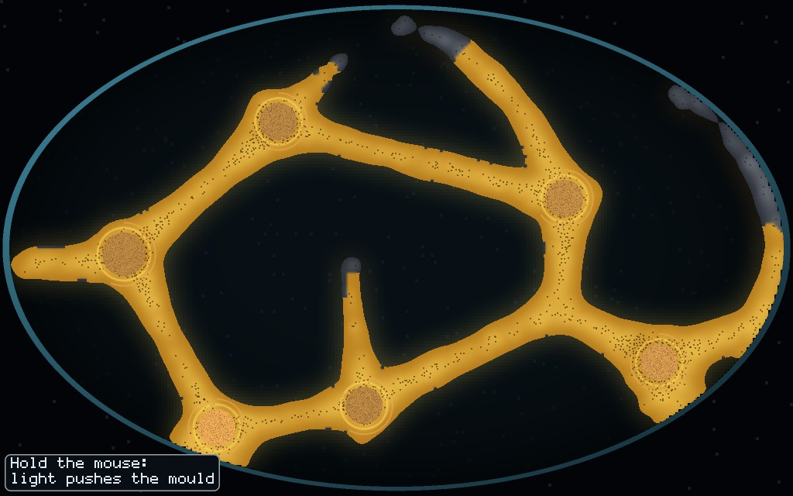
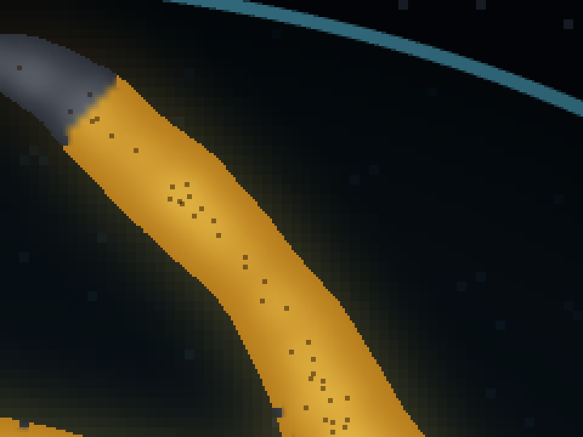
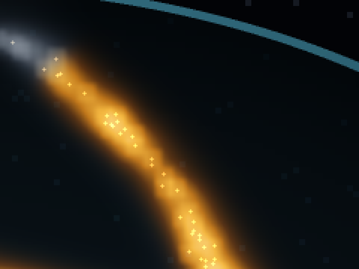
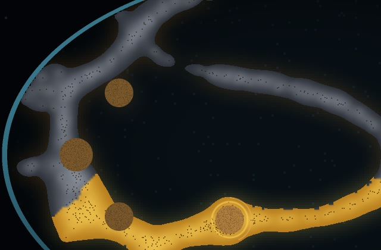
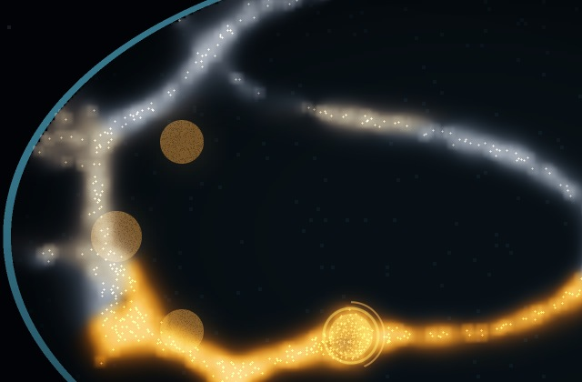

<title>Mould Sim-True Look</title>
<meta name="claude:viewport-fit-sides" content="cover">
<link rel="stylesheet" href="https://fonts.googleapis.com/css2?family=IBM+Plex+Mono:wght@400;500&family=IBM+Plex+Sans:wght@400;500;600&family=Space+Grotesk:wght@500;600&display=swap">
<style>
/* One reading column; each pair is today's drawing beside the same dish drawn from the fields. */
:root {
  --bg: #eef2f0; --panel: #ffffff; --ink: #17222a; --dim: #55646c; --line: #cdd7d6;
  --amber: #a86a00; --amber-soft: #f6e7c4; --rim: #2b6f86;
  --display: "Space Grotesk", "IBM Plex Sans", system-ui, sans-serif;
  --body: "IBM Plex Sans", system-ui, -apple-system, "Segoe UI", sans-serif;
  --mono: "IBM Plex Mono", ui-monospace, "SF Mono", Menlo, monospace;
}
@media (prefers-color-scheme: dark) {
  :root:not([data-theme="light"]) {
    --bg: #0a1015; --panel: #111a21; --ink: #e6ecea; --dim: #96a5aa; --line: #24323b;
    --amber: #f0a92b; --amber-soft: #2c2412; --rim: #5fa9c2; color-scheme: dark;
  }
}
:root[data-theme="dark"] {
  --bg: #0a1015; --panel: #111a21; --ink: #e6ecea; --dim: #96a5aa; --line: #24323b;
  --amber: #f0a92b; --amber-soft: #2c2412; --rim: #5fa9c2; color-scheme: dark;
}
body { background: var(--bg); color: var(--ink); font-family: var(--body); font-size: 16px; line-height: 1.55; margin: 0;
  padding-left: max(16px, env(safe-area-inset-left, 0px)); padding-right: max(16px, env(safe-area-inset-right, 0px)); padding-block: 28px 64px; }
main { max-width: 760px; margin: 0 auto; display: flex; flex-direction: column; gap: 20px; }
h1, h2 { font-family: var(--display); text-wrap: balance; line-height: 1.2; margin: 0; }
h1 { font-size: 2rem; font-weight: 600; }
h2 { font-size: 1.35rem; font-weight: 600; margin-top: 24px; padding-top: 18px; border-top: 2px solid var(--rim); }
p { margin: 0; }
.kicker { font-family: var(--mono); font-size: 0.78rem; letter-spacing: 0.08em; text-transform: uppercase; color: var(--dim); }
.lede { font-size: 1.1rem; }
.answer { background: var(--panel); border: 1px solid var(--line); border-left: 4px solid var(--amber); padding: 16px 18px; display: flex; flex-direction: column; gap: 10px; }
ul, ol { margin: 0; padding-left: 1.3em; display: flex; flex-direction: column; gap: 6px; }
.figs { display: grid; grid-template-columns: repeat(2, minmax(0, 1fr)); gap: 14px; }
@media (max-width: 620px) { .figs { grid-template-columns: minmax(0, 1fr); } }
figure { margin: 0; display: flex; flex-direction: column; gap: 6px; min-width: 0; }
figure img { width: 100%; height: auto; display: block; border: 1px solid var(--line); background: #06090c; }
figcaption { font-size: 0.9rem; color: var(--dim); }
.count { font-family: var(--mono); font-size: 0.8rem; color: var(--ink); background: var(--amber-soft); padding: 3px 7px; display: inline-block; font-variant-numeric: tabular-nums; }
.note { font-size: 0.93rem; color: var(--dim); }
</style>
<main>
  <div class="kicker">Mould game · a look drawn straight from the simulation · 2026-11-10</div>
  <h1>Why the edges look drawn, and what the simulation really holds</h1>
  <p class="lede">The same dish at the same moment, drawn two ways. Left is the game today. Right is a mock-up where the picture is the simulation's own numbers: no outline, no cut-off, no fill.</p>

  <div class="answer">
    <b>The question for you</b>
    <p>Is the right-hand look the direction you want? If yes, the looks thread builds it properly in the game. It is a mock-up made by me for this page, not in the game yet.</p>
  </div>

  <h2>Orange against black</h2>
  <div class="figs">
    <figure><figcaption>Today. Free dish, 22.5°, seed 1, 60 s, nobody playing.</figcaption></figure>
    <figure><figcaption>From the simulation. Same dish, same moment. <span class="count">1,773 walkers, one dot each</span></figcaption></figure>
  </div>
  <p>The mould lays a trail, and the trail spreads and fades. That is a smooth hill of numbers: high in the middle of a strand, falling away to nothing. Today's drawing picks one height on that hill, paints everything above it flat orange and everything below it black. The hard edge is that cut. It is not in the simulation.</p>
  <p>On the right, brightness is the trail's height through one fixed curve, so the strand fades out the way the numbers do. Each walker adds a small dot of light, so busy places are brighter because more walkers are there.</p>
  <div class="figs">
    <figure><figcaption>Close-up, today.</figcaption></figure>
    <figure><figcaption>Close-up, from the simulation. <span class="count">trail height: middle of a strand about 4.7, today's cut at 0.5, half of all trail cells below 0.64</span></figcaption></figure>
  </div>
  <p>A side effect worth knowing: the strands read much thinner on the right without changing how the mould behaves. Today's fat tube is mostly the faint skirt of the trail painted at full strength. The mould thread measured thinner tubes by changing the mould itself and found it broke the planned solutions. This gets the finer look from the drawing alone.</p>

  <h2>Orange against grey</h2>
  <div class="figs">
    <figure><figcaption>Today. Keep It Alive, seed 1, 40 s, nobody playing. <span class="count">540 walkers</span></figcaption></figure>
    <figure><figcaption>From the simulation. Same dish, same moment.</figcaption></figure>
  </div>
  <p>The simulation holds, for each bit of mould, how long ago food last reached it. Today's drawing turns that into fed or not fed, so orange meets grey on a line. On the right the colour slides from gold to grey by how long it has gone without, so you see hunger creeping along a strand before it takes hold.</p>
  <p class="note">My part in this: in my review of the looks I asked for hunger to show immediately. That was about timing. I did not ask for it to blend, and the fix made the line sharper.</p>

  <h2>What you would trade</h2>
  <ul>
    <li><b>Faint parts are faint.</b> A thin feeler with three walkers on it is a few dim dots, where today it is a solid orange finger. That is more honest and harder to spot.</li>
    <li><b>The edge no longer shows the rule.</b> The game counts a cell as tube above a set trail height, and today's outline is exactly that line. With a soft look, "is this pile joined?" has to be answered by the food bar and the ring on the pile, not by the outline.</li>
    <li><b>Hunger blending here is partly my drawing.</b> I spread the "how long since fed" numbers a little along the strand so they blend. With real food flow switched on, the simulation holds the amount of food in each bit of tube, and that would blend by itself with no help.</li>
    <li><b>Mock-up limits.</b> The food piles are covered by glow, the mould is cut in steps where it touches the rim, and the lamp, water and sleeping mould are not drawn. A real build would fix these. Cost not measured.</li>
  </ul>
</main>
